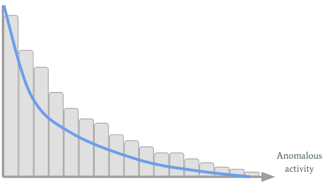

This post was originally published by me on the Fortscale blog.
Fortscale's product helps organizations eliminate insider threats by detecting anomalous user behavior.
Detecting anomalous user behavior is hard. Really hard. Here at Fortscale we show that with the right tools, it’s doable. Our data science team has developed a set of self tuning machine learning based algorithms that aim at doing exactly that. Although the algorithms may be complicated to comprehend, their basic mechanism is easy to understand.
The fortscale product contains many models, each capturing a different user behavioral aspect such as typical working hours, machines a user usually connects to, cities he’s connected from, etc.. If a user performs an anomalous activity in some aspects, the relevant models will trigger a high risk score for this activity. These risk scores are used as the basis of creating high-level alerts indicating suspicious activity.
Naively, we could say that an alert is created for a specific activity if the sum of the risk scores triggered throughout this activity is high enough. But what is “enough”? A risk score of 80? 90? If we set the threshold too low, too many alerts will come up, and most of them will be false positives. On the other hand, if the threshold is too high, we’ll miss the true anomalous activity lurking in the organization. This threshold effect is known as the ROC curve.
We could make an effort to estimate what the threshold should be, yet, it’s hopeless; as each organization has a different suitable threshold depending on level of activity taking place.
Moreover, even if we knew what a given organization’s “best” threshold is, we would face a problem: there are users who tend to change their behaviour more often than others. So every time one changes something (and crosses the threshold) an alert will come up. Unfortunately, the security analyst won’t give the proper attention to the user who cried wolf. You see the problem? We’d like the threshold to automatically adapt for each user, so that users who tend to do suspicious activities will bring up an alert only when doing something that is actually anomalous.
In order to tackle this problem, we decided to create a second layer of learning and use machine learning aspects to identify these thresholds dynamically, automatically and transparently. Specifically, we take the sum of these individual scores and give it a name – SMART value (Significant Multiple Anomalies useR Threats). The SMART value is mapped into a high score if it crosses the learnt threshold, which in response triggers an alert.
The only hole in the story is how to automatically come up with a user’s threshold? I will leave the technical details for a future post and for now will just give a teaser.
Let’s say Jerrard from the sales department has performed some anomalous activities in the past, or in other words, he had high SMART values for several activity timeframes. We can visualize Jerrard's past SMART values with an histogram:

On the horizontal axis we see the SMART values, while the vertical axis shows their count. Jerrard’s threshold is created by fitting the green curve to the histogram. It’s easy to see that because Jerrard has performed suspicious activities in the past, his curve stretches to the right. A new SMART value will trigger an alert only if it’s far enough to the right of the graph so it’s not under his green curve. For most users this personalized adaptive threshold works pretty well, but there are also problematic users. Let’s consider Joe from the marketing department. Joe is a really boring guy. He comes to the office every day in the same hour and performs the same activity... Well, his SMART values histogram looks like this:

Pretty boring, right? But today is Sunday, and Joe has a really big campaign he has to finish by tomorrow. So he decides to connect to the company’s VPN so he can finish it. Since it’s Sunday (not typical for boring Joe), one of the models gives a high score, which results with a higher SMART value. This SMART value will be to the right of the green curve, so an alert will be triggered.
One could argue if it’s really a suspicious activity and if it should be reported to the analyst. In small boring organizations it might be worthwhile to trigger an alert. In organizations with spicier activity going on, we’d like the analyst to invest his precious time investigating the users with the highest risk, and not boring Joe.
We can conclude that the personal adaptive threshold should also adapt to the organization’s overall amount of anomalous activity: if there are many anomalous activities Joe’s threshold should increase in such a way that he’ll trigger an alert only if he performs a radical anomalous activity. If there are not that many alerts in the organization, Joe might be worth the time of the analyst (it’s either that or playing Solitaire). So how do we do it?
Let’s inspect the organization’s past SMART values:

We can see many interesting things have occurred in the organization...
So Joe’s working on Sunday should clearly be considered as non-alert. It’s done by combining the organization’s blue curve with Joe’s green curve:

Joe’s green curve turned into the yellow one (so his sensitivity threshold has increased), which is exactly what we wanted.
In future posts I’ll continue and discuss the technical details of how this adaptive threshold is implemented; how the user’s curve is fitted to his SMART values; how the organization’s curve is fitted to the organization’s behaviour; and how they are combined into one curve.
Comments !